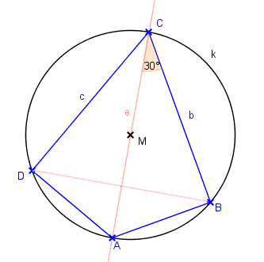

Lösung Nr 2c, p. 33

Gegeben: Von einem Sehnenviereck: Umkreisradius r, Winkel α = 2γ, a = d, b = c
Gesucht: Konstruiere das Sehnenviereck
Lösung: (Skizze vorher erstellen!)
Da α = 2γ, so gilt wegen α + γ = 180°: 3γ = 180°, also γ = 60°.
Da weiter b = c, so muss ΔDBC gleichseitig sein.
Konstruktion:
- Umkreis k mit Mittelpunkt M und Radius r
- Wähle beliebigen Punkt C auf k und zeichne MC
- Trage von C aus je 30° an MC ab → Schenkel b und c
- b ∩ k = {B,C}, c ∩ k = {D,C}; ΔDBC ist nun gleichseitig
- Die Mittelsenkrechte von BD ist zugleich Diagonale e (geht also auch durch C)
- e ∩ k = {A,C}; So erhält man die Ecke A
- Viereck ABCD ist also Drachenviereck.